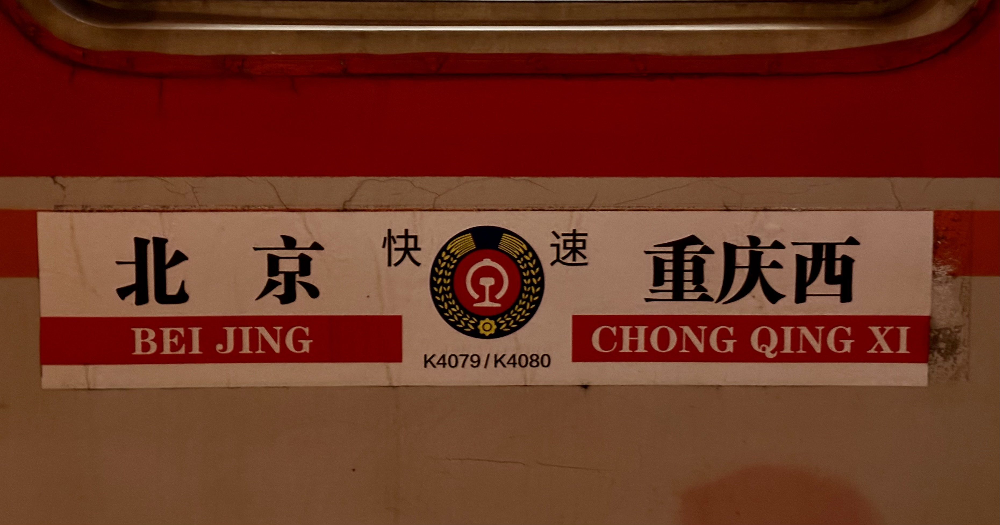
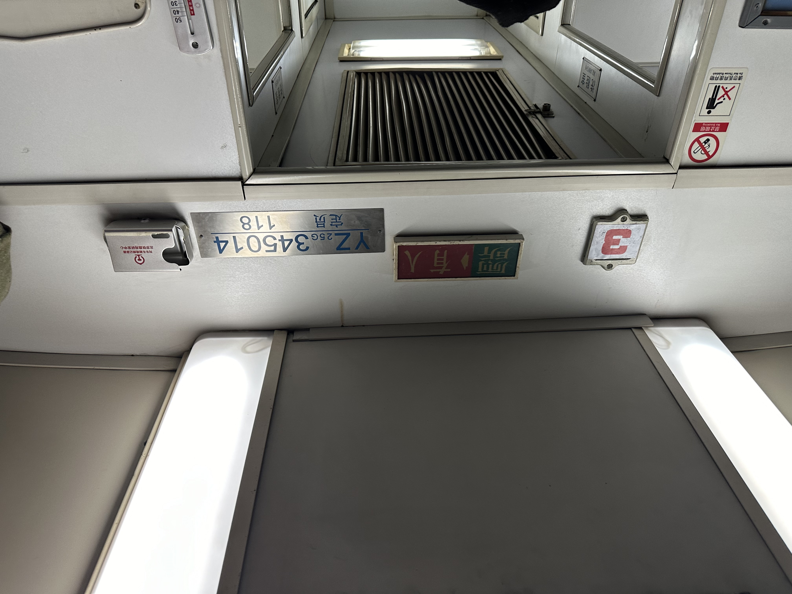
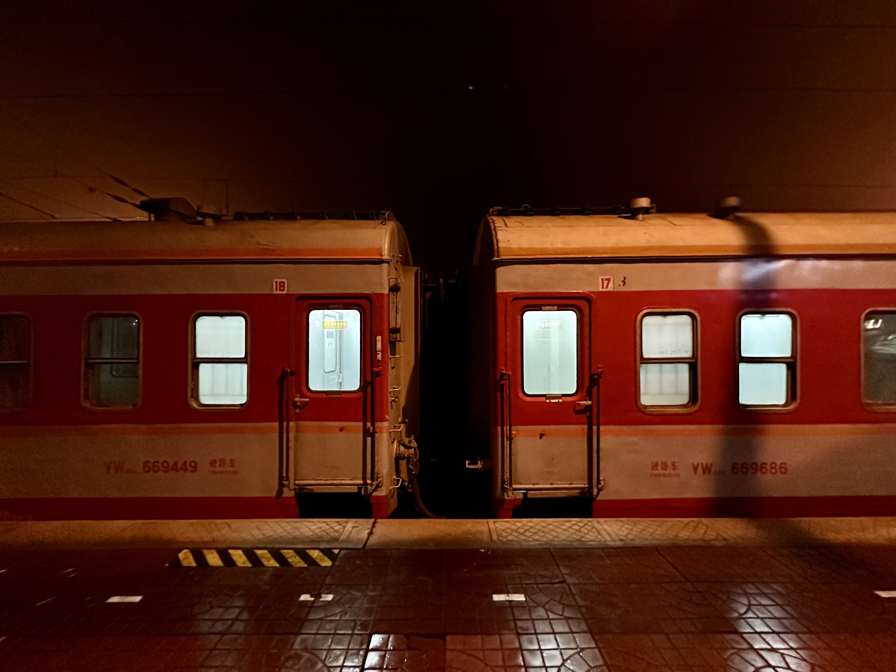
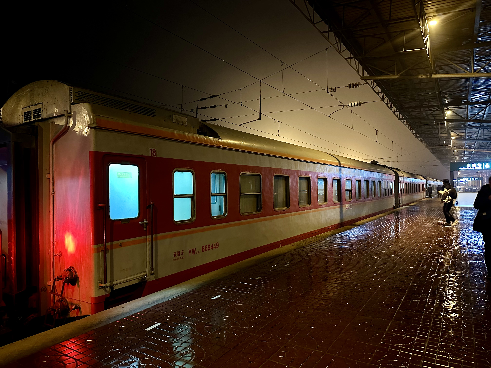
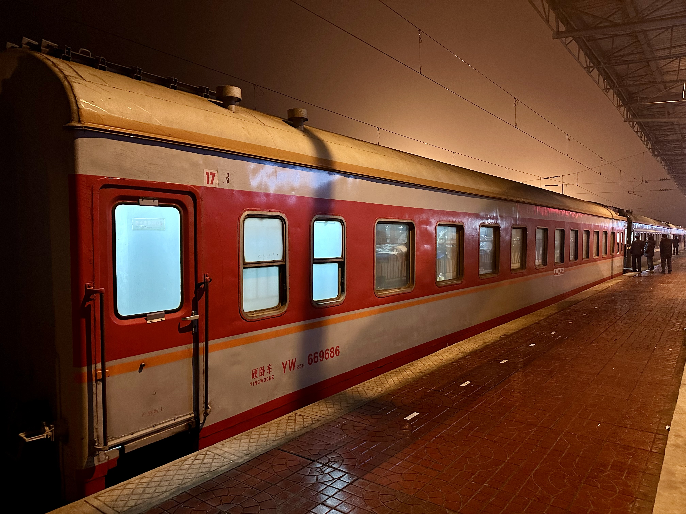
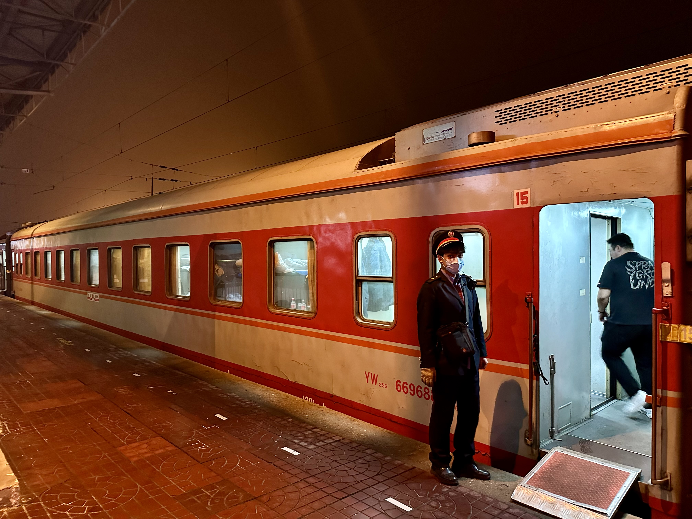
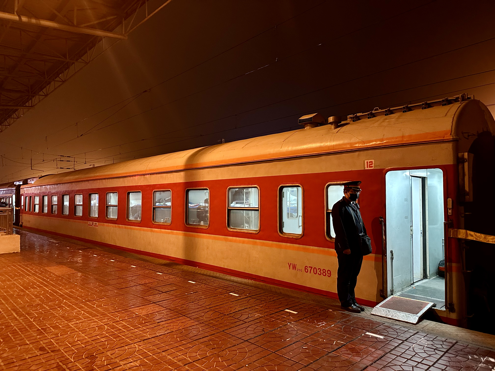

「L'ÉPOQUE.」
今年春运期间最早让社团注意到的临客列车莫过于往返于北京与眉山的K4219／20次列车——这趟列车在进京方向的全程硬座车票票价只需要49元。虽然后续廉价的硬座车票和对应的折扣在售票平台逐渐变多，但作为最早发现的“先行者”，这趟车确给我们留下的印象为最深。可惜的是我们发现时寒假已经开始，于是没有第一时间去薅中国铁路的羊毛；但幸运的是今年春运的结束时间在寒假结束之后，因此我们依然有机会乘坐到这趟便民列车。 巧合的是在回到学校的一两天之后我们无意间在网络上看到了春运期间另一列经过西安境内的K4079／80次列车，同为临客的它3组车底中有1组坐拥足足9节原色25G型客运列车，而剩下的2列中分别有4节和3节。
我见识到北京铁路局的原色之余裕最早是在K214次列车上——这趟由西安到天津的列车2组车底中有1组含有原色25G型行李车。在这之后便听说北京铁路局热衷于保留一些红色涂装的25G型客车；甚至有时会将返厂的25G由绿色重新刷回红色。在听说北京铁路局今年的临客含有原色的消息之后我第一时间便想起了当时在张桥站甩下赤光之尾的身影，于是果断加入前往的队伍。

由于这趟车从离京到返京所需要的时长就已经过了接近3天，所以显然这3组车底是同时在路上跑的。根据这些视频提供的信息，我们决定3月1日前往引镇站乘坐那列凭廉价车票闻名全国的列车前往镇安站，随后在镇安立即乘这趟至少有3节原色车厢的临客回引镇。根据计算，我们在引镇站等候K4219到站之前会先看到拥有9节原色车厢的K4079次列车跨站。
等待原色（K1004／1）
由于K4079在西安境内不停靠任何一站，我们也不能确定这趟列车会不会比预计跨越引镇站的时间更早；因此我们一早就到了引镇站附近准备拍摄。这一天本来是阴天，但在我们赶到引镇站时突然下起小雨，旋即又由小雨变为了小雪。我们虽然带了伞，但又害怕伞挡住彼此的视线和摄像头，所以万般无奈之下只能冒雪站在一处铁路维护工人用入口。
按照先前几天情况估测，列车会在17:25左右经过引镇；但我们到17:40也没有等到。这时引镇站站台上突然传来提示铃声，旋即是一阵女声。
“上行有车进站。”
西康铁路上行应当是由安康方向来的列车。我们根据引镇站当天的时刻表进行比较（引镇站不支持早晚点查询），发现这个时间段应当是没有列车的。于是我们便以为是货车。不一会我们就能看到远方高处车头所发出的白光了；但雨雪连同着雾让我们还看不清楚。又过了一会发现车头的颜色是枣红色而不是灰蓝色；这时我们才意识到这应该是客运列车。我站在他们南边，是我们一行人当中最有可能先看到这趟车之所从来的人；通过摄像头放大，我看到了这一抹枣红的后方是一台空调发电车，再往后的车厢略高一些；又过了几秒，终于能看清这“更后方”的车厢了——它的车窗有上有下。
“是
我尽量保持着只能让声音扩散到他们的耳朵中而不是更远的音量轻喊。他们顿时露出了不可置信的表情；这个表情旋即又变成了惊喜。K1004／1次列车正常到达引镇的时间是18:00，我们在这个时刻能够见到这班车就意味着这趟双层列车在16:06准时从旬阳北发车之后一路没有遭遇任何困难路段应有的困难，最终才能早点足足20分钟进入西安境内。我们自然是要拍照的；这趟车虽然是1月调图后新增的图定列车，但至于后续会不会因为“淡季”之类的原因停开，我们也不能肯定。
_Approaching_Yinzhen_Railway_Station,_Mar_1_2024.jpg)
随后又等了些时间，但那列9节原色终于也没有来；K4219即将开始检票了，我们也就因此往车站走。
引镇—镇安（K4219）

因为引镇站不是一个等级很高的站，所以停靠的时间并不长。在站务的催促声中我们上了车，但车门还没有关；我靠在另一侧的车门旁，望着远处的原色双层，心中又有些莫名的遗憾。
此时突然从彼端原色双层的窗户中产生了白色的反光——似乎是有车来。我连忙打开摄像头，准备录制这列可能是我们所想的那班车的经过；结果不出我所料，正是那列我们翘首已久的列车。
| 2024年3月1日傍晚出现在引镇站和视频镜头拍摄范围内的原色车厢 | ||
| K4079次（排名按镜头中出现顺序从先到后） | ||
| YZ25G-343937 | YZ25G-343120 | YZ25G-343926 |
| YW25G-668668 | YW25G-669866 | YW25G-669861 |
| YW25G-669459 | YW25G-669857 | YW25G-669871 |
| K1004／1（排名按镜头距离由近及远） | ||
| SCA25K-892717 | SYZ25K-345608 | SYZ25K-345604 |
随行的其他人因为不在同一节车厢此时正忙着向餐车走，只是目击到了它的经过，终于是没有记录下来。我们都没有吃晚饭；由于我离餐车比较近，所以只需要站在原地等他们即可。不过多时我们汇合了；他们看了我的视频也心生几分羡慕。餐车上的餐食比陆地上的卖的贵很多，但不论如何还是买了。
这趟车从引镇准时出发，路上因为尽是隧道所以也没有什么可说的。车厢也是很普通的25G型客车车厢。
过了大约1个小时，列车进入镇安站；我们在这一站下了车。在十分钟后，我们要重新进站检票，登上返程的原色之旅。

镇安—引镇（K4080）
3月1日离两会已不剩几天了，因此又到了一年数度的进京方向列车乘客需要进行二次安检的时间——就算是临客普快也不例外。随行的一位朋友带的三角钥匙在这第二次安检中被镇安站方面以“可能对行车造成危险”为由扣了下来——虽然从这个钥匙用来打开车窗的功能上结合如今“铁路禁止开窗”的规定来看确有这个可能。我们说笑着重新登上镇安站台，等待今晚正菜的到来。

这一天北上的K4080次列车一共有4节原色25G客车。本来是要进行验票的，但北京铁路局的工作人员们被镇安车站告知他们在这个车站只停2分钟，所以就又放弃了。在匆忙中上车之后，我们从原本应该进行验票的车厢向餐车走去；路上经过的一节车厢跟其他车厢虽都为25G型硬座客车车厢，但硬件设施完全不同。

这显然是早期型的25G型塞拉门式硬座客车。不过我们在前往餐车的过程中只经过了一列这样的列车；到餐车后我们当中有人想要拍照，被餐车中的工作人员发现及时报告给了同样在餐车准备吃饭的列车长。列车长闻言立即高声表达了对我们的准许；我们随机感谢了他们，同时也轻松了很多。还没有吃饱，在这趟车上又点了一份蒜苔炒肉；这趟车上的餐价就比刚刚来时那辆要亲民很多。从端上来的餐盘和列车员挂在衣钩上的大衣上的名牌来看，这趟车属于北京铁路局石家庄客运段；随行的这位朋友也来自石家庄，于是主动光顾生意，又要了几份烤馍片。
饭饱之后大概30分钟，列车早点停靠在引镇站。我们从餐车经软卧车厢走到出口；这时留意到这节软卧车厢的门有些古典，旋即抬头看到了“552”开头的铭牌；这是第一代25G型软卧列车。
由于上车时比较仓促、这趟列车在引镇站会停靠20分钟，所以给了我们充足的拍摄时间。
|  2024年3月1日晚离开引镇站的K4080次列车所含原色列车车厢 | |||
|  YW25G-669449 |  YW25G-669686 |  YW25G-669688 |  YW25G-670389 |
北京铁路局的车务们对我们非常友好，没有对我们的拍摄进行任何阻拦。在简单的留影之后，晚间的原色之旅就告一段落了。
写在最后
当我们离开引镇站之后，我打开12306手机应用，发现3月2日开始就没有K4079次列车南下了。换言之，明天经引镇站北上的9节原色是K4080次列车在今年春运的最后一舞。南下的K4219在3月3日起才不再南下；但不论怎样，今年的春运是基本到此结束了。
春运作为一年一度的中国最大人口迁徙事件如今也已经成为了一项“政治任务”，北京铁路局把这些古董车厢都拉出来跑长途除了有对自己的车体所抱有的自信，也有保障所有劳工都能够回家过年的决心。“人民铁道为人民”；纵使未来普速铁路逐渐被高速铁路所取代，春运的便民票价也应当还会持续——从截至目前为止的动集折扣来看，铁路部门还没有抢钱的打算。
虽然北京铁路局在最近几年“刷绿狂潮”有所减缓的情况下报复性地给25G型客车刷红，但这些车从编号来看确实都是很老的客车；这些车可能就没有被刷绿过，而是在库中保存（必要的时候拉出来跑一些临客）——待到了年限就直接报废。和先前在宝成铁路上所乘坐的6063／4次列车体验感不同，虽然现已同为25G型客车，但在这种25B味道更浓一些的车厢中更有一种回归上世纪末春运的感觉；待到这些真正老的车厢退役之后，也许会有新的车厢被刷回所谓的“原色”，但2015年后出厂的车厢本身就是橄榄绿色——
到那时我们所追随的所谓“原色”还属于我们原本所怀念、热爱的那个时代吗？也许那时我们所追思的又将变成仅剩的那几抹昔日我们所不齿的墨绿色了罢。